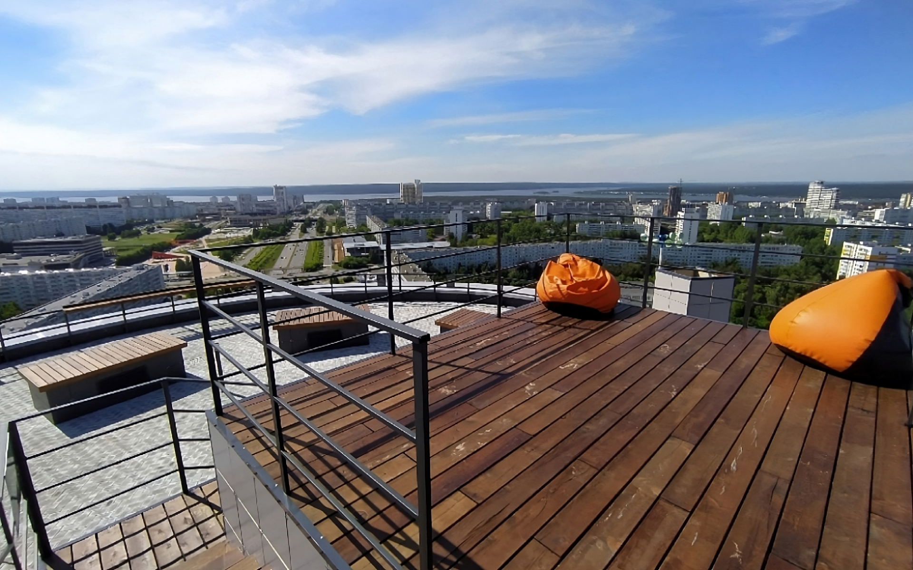
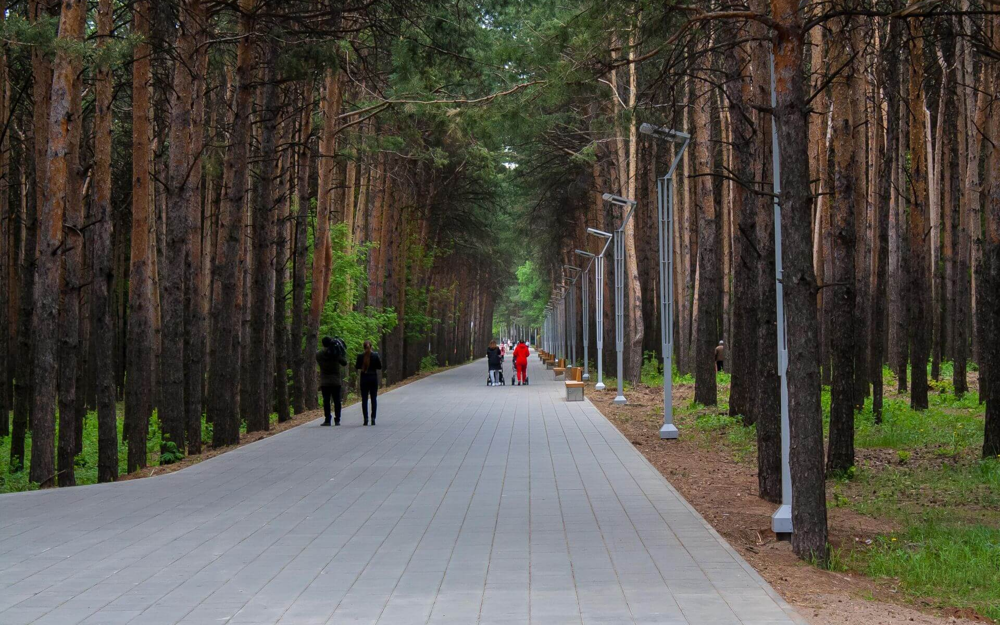
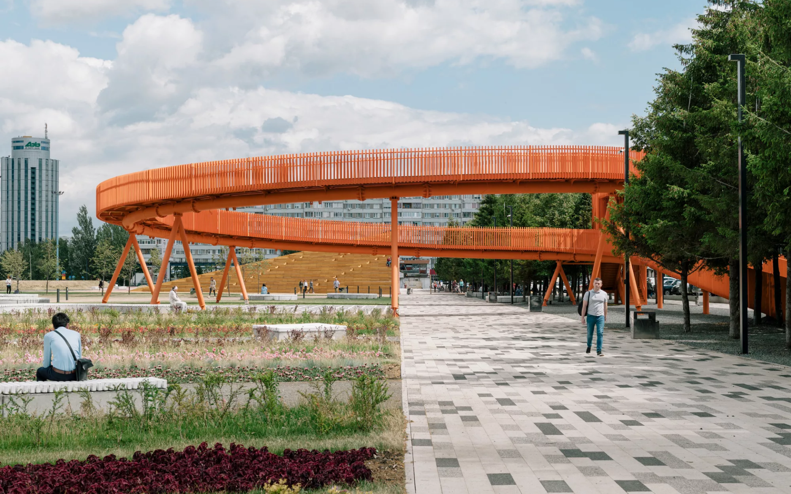
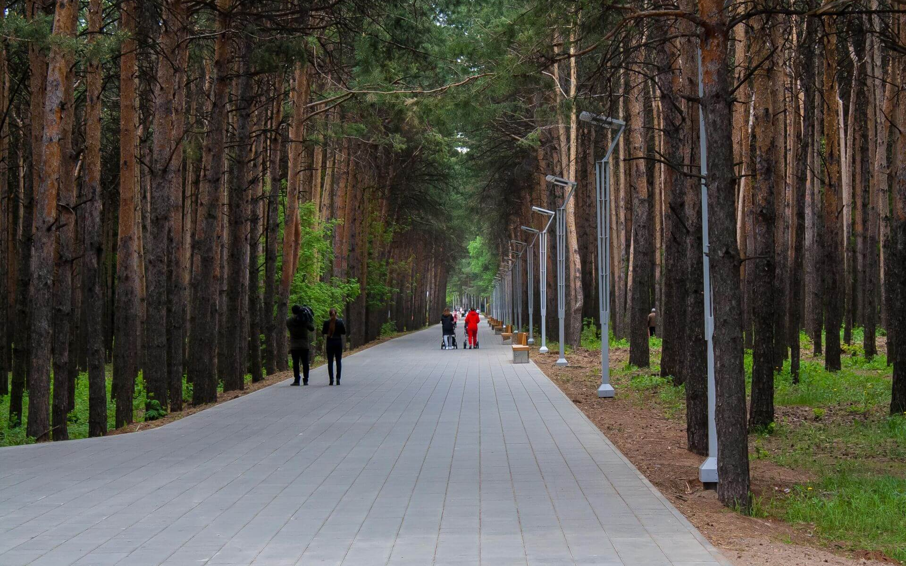
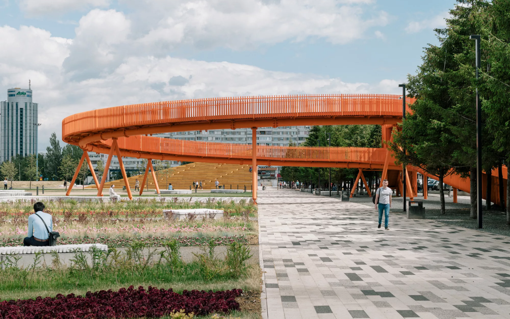
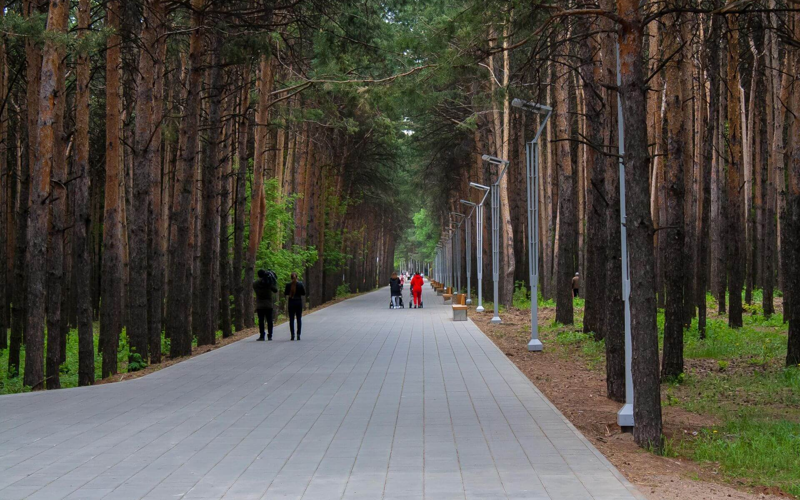
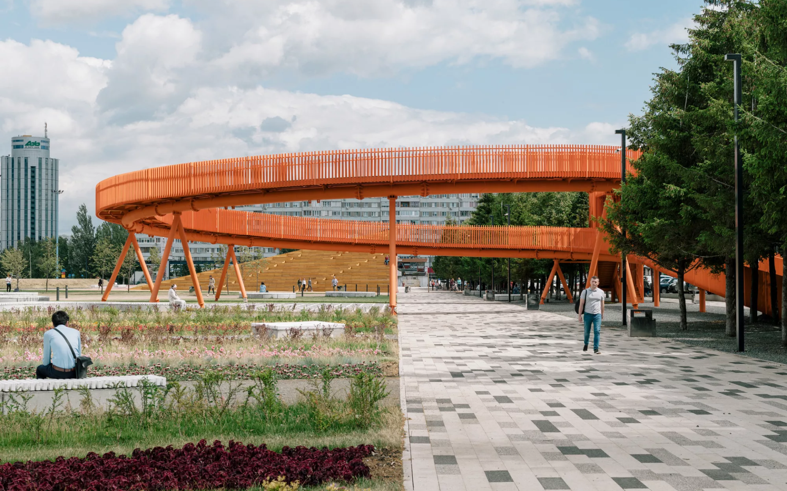
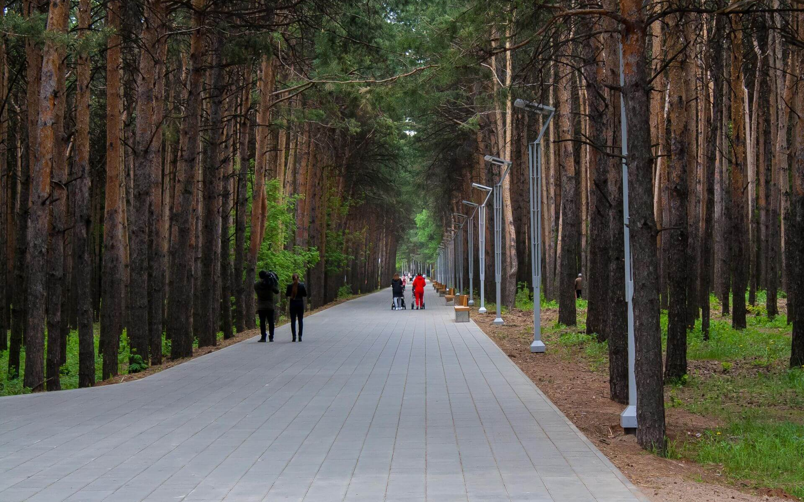
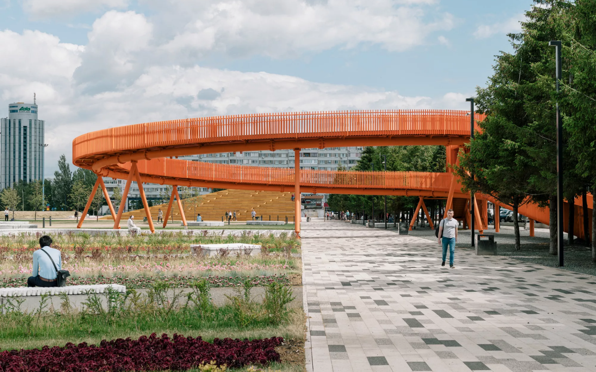

 







В Набережных Челнах жилые массивы города и его деловые районы отделены друг от друга парками и широкими проспектами, которые украшают зелёные аллеи и клумбы.
Микрорайоны называются комплексами. Такая традиция возникла благодаря быстрому расширению территории Челнов: микрорайоны строились в 70-е годы одновременно.
Город окружён зелёными зонами: с одной стороны Боровецкий лес, а если переехать по мосту через Каму, можно попасть в национальный парк «Нижняя Кама».
Набережные Челны на карте